Why- So the pump head does not freeze. Alternatively, to pump from greater depths.
A pitcher pump works with suction. All the mechachial/moving parts are in the pump head. It depends on an airtight seal between the plunger and the cylinder wall. And then, that the pipe all the way down to the water table is airtight.
This modification extends the drive rod of a pitcher pump 5 feet. A new cylinder is fabricated. The flapper valve is discarded (a foot valve does the same job).
At the bottom of the page you can find a parts list, references, and a few more details.
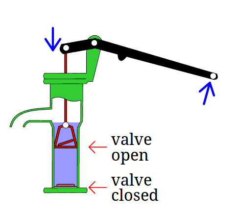
Diagram
See here this animated diagram of how a pitcher pump works.
The parts I will be refereing to are the drive rod, the plunger, and the flapper valve.
Credit goes to this wiki creative commons animation
Finished product
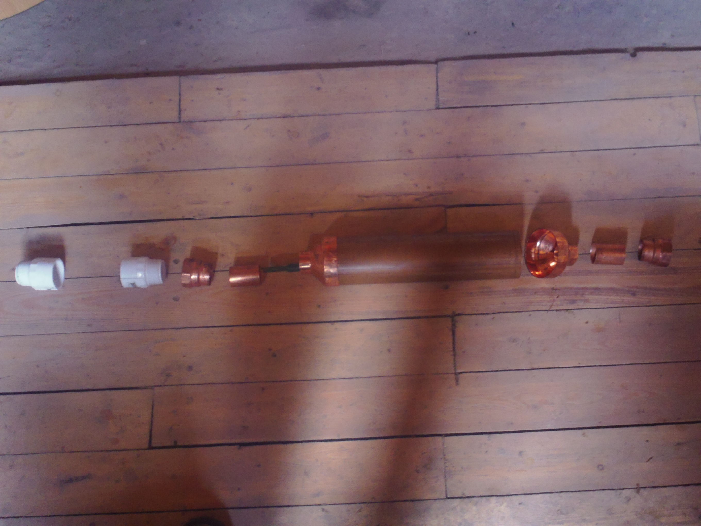
Cylinder -breakdown
From left to right
1. PVC thread coupling that attaches to bottom of pitcher pump and fits on to 5ft long 1-1/4in pvc pipe(not pictured)
2. PVC thread coupling, attaches pvc pipe to
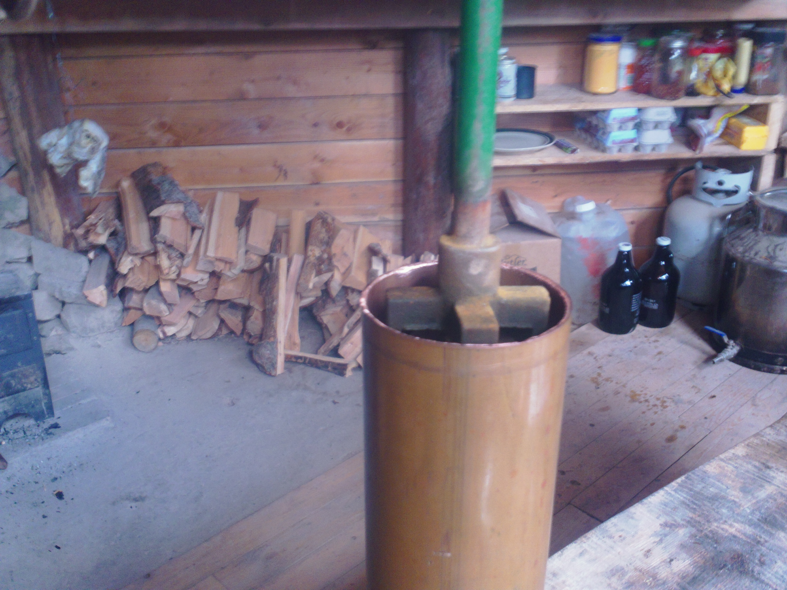
Plunger fits in 3" DWV pipe
Took awhile hunting for something that had the right inside diameter(ID). The cast iron ID is measured to 2.95inches. This doesn't have to be incredibly precise because when the leather is wet it swells up. In fact, it feels pretty loose when dry.
The only two materials I could find that had this ID were PVC and copper. Although copper can be pricey at this diamter, you need less than a foot. I have concerns that PVC may wear poorly over time
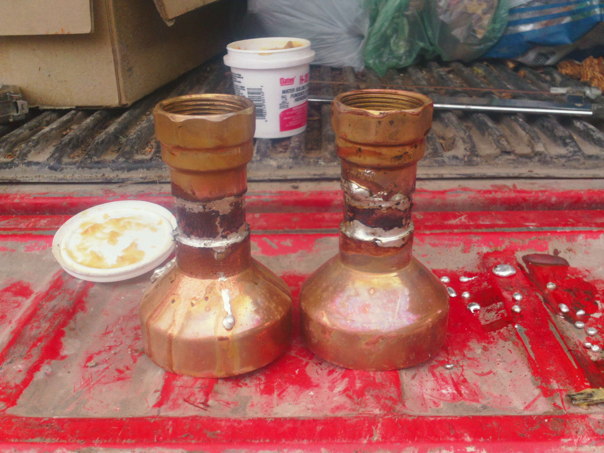
Cylinder ends
A 3">1-1/4" reducer is brazed to a short piece of 1-1/4" copper pipe which is brazed to a 1-1/4" threaded adapter.
First time brazing, hopefully they look more consitent next time :)
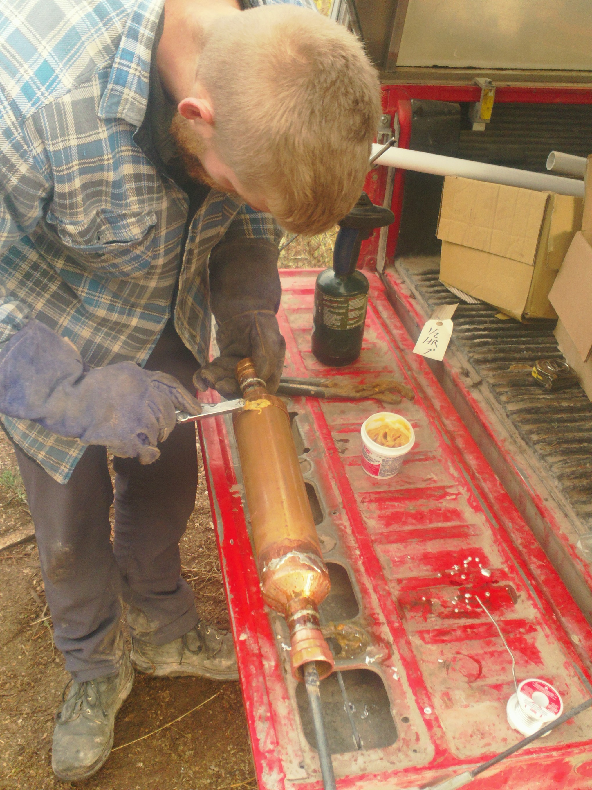
Apply
This cleans the copper as it is heated up
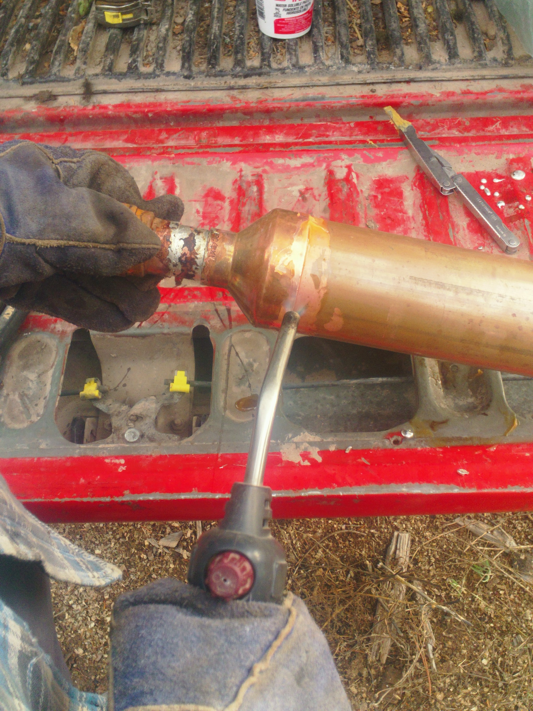
Brazing
Notice the copper is really pure looks where the was applied.
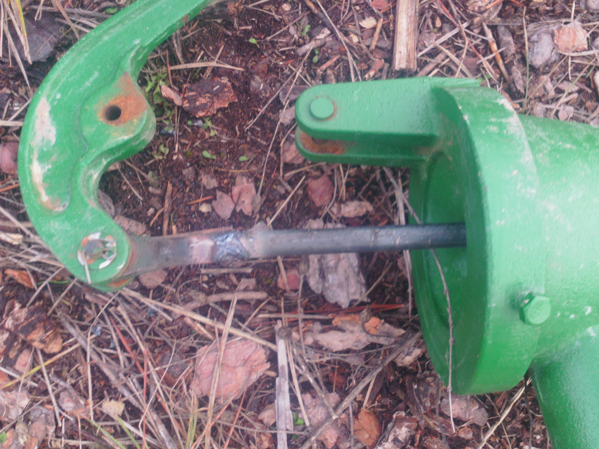
Drive Rod
The drive rod is extended with a 6ft segment of 0.5" round stock.
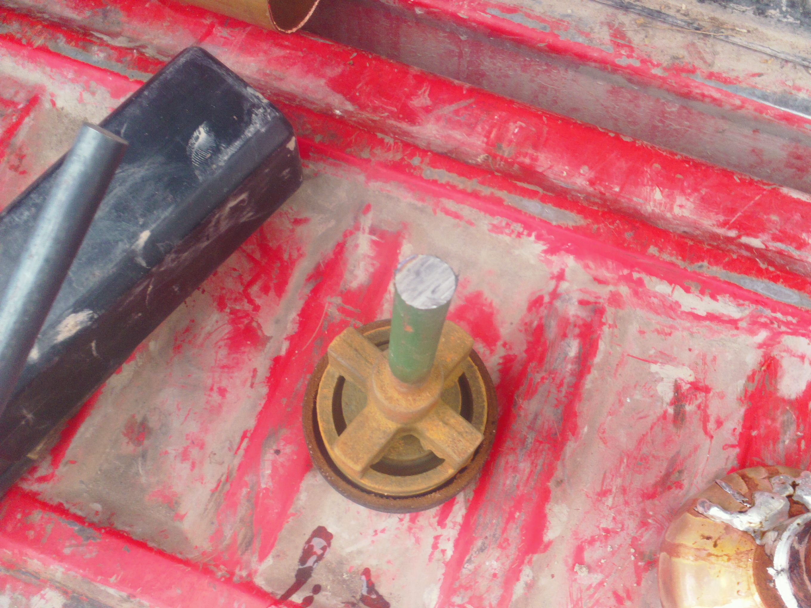
Plunger cut
The plunger is cut from the drive rod.
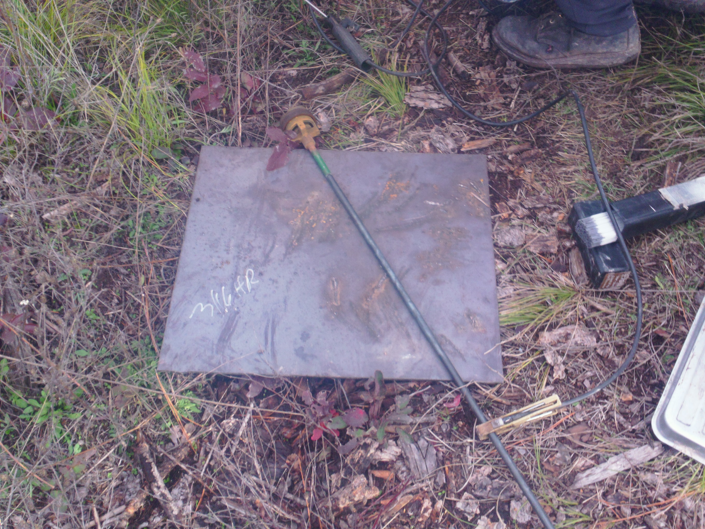
Plunger welded
The plunger is welded to the other end of the round stock.
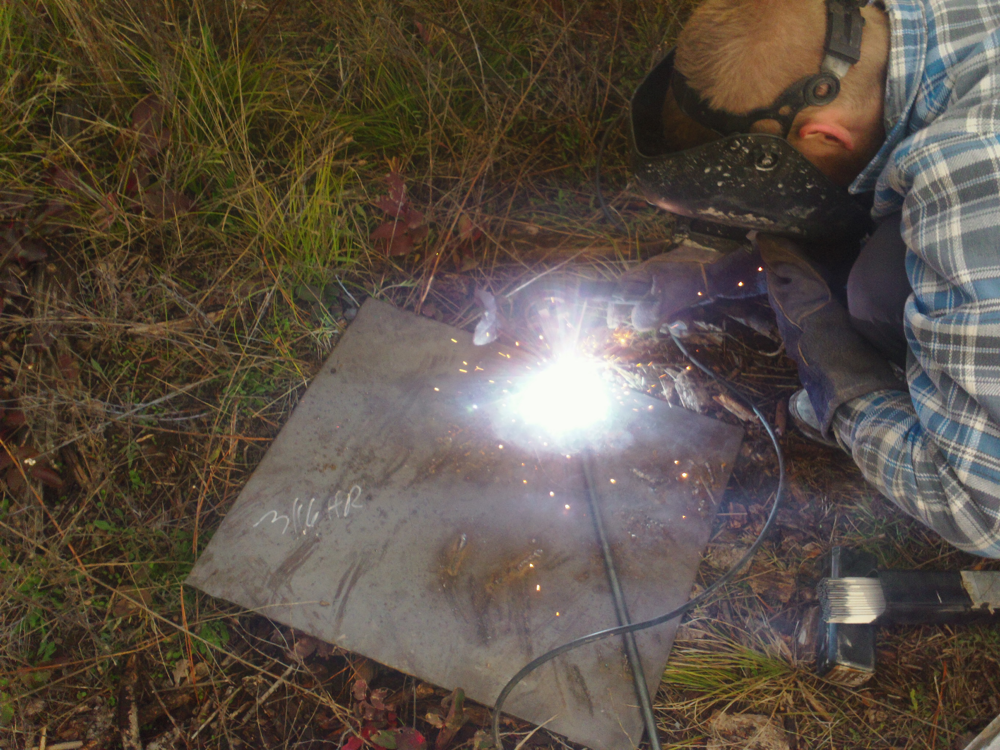
Welding
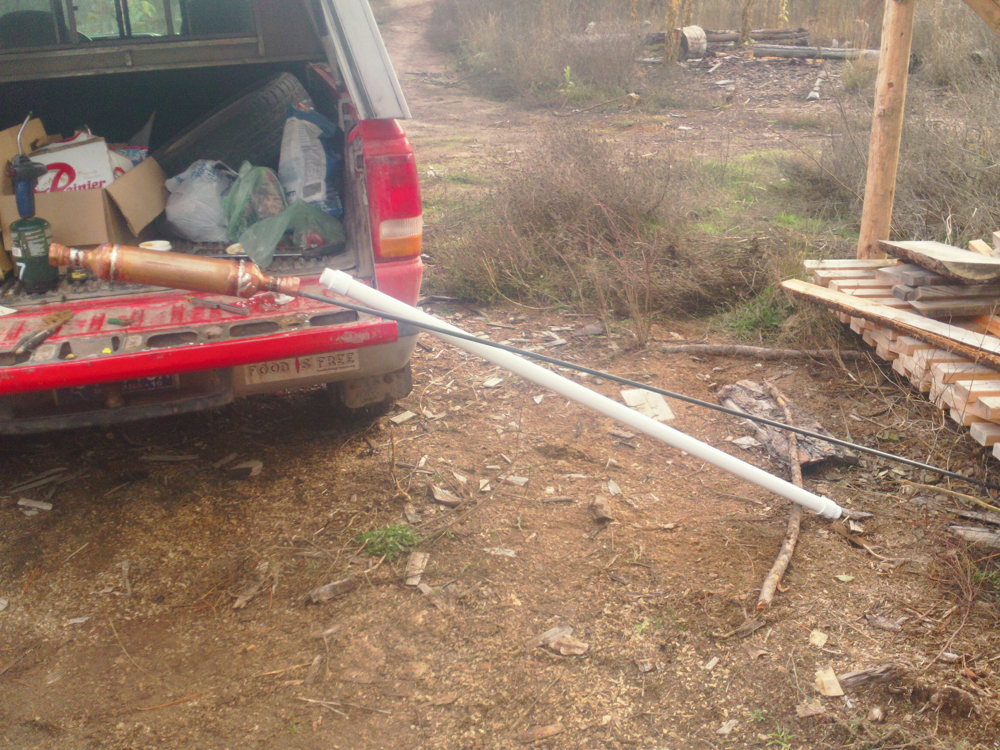
All brazed
The plunger must be inside the new cylinder before brazing on the last reducer. Make sure the leather end of the plunger is as far away from the heat as it can be. Servicing the leather may be hard. Guys at the plumbing shop said that you can unbraze pipe pretty easily. But I think on a 3in pipe with a small torch that might not work.
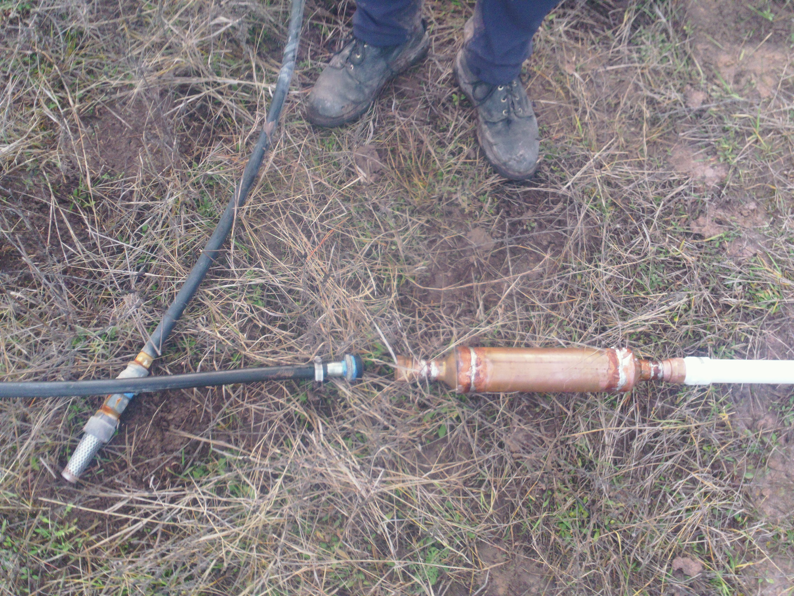
Attaching the drop tube
Poly pipe is dropped into the well for the remaining depth. I dont trust pvc barbed fittings at this diamter so I use galvanised. Ideally the threaded reducer between the zinc and copper would be galvanically isolated. Those fancy ones are absurdly expensive. So I just figured this piece would need to be replaced every 2 years. But, I now think I will just replace it with a $1 threaded PVC reducer. The barbed fitting will still be zinc.
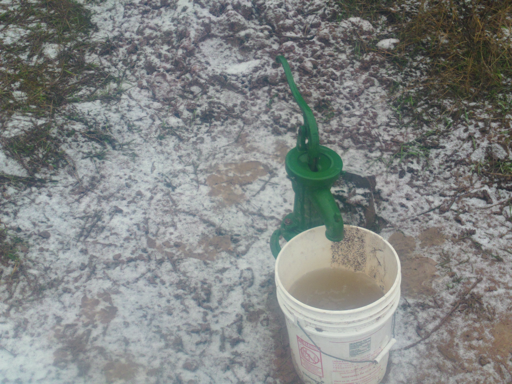
Pumps!
The pump now works well below freezing temperature.
FAQ
Email me with any questions. jim (at) woodstead.org
{kind=link}